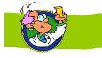

The PETS 2024
Speed Mentoring Experience
•
Where Connections Happen!
Get ready to take your networking skills to the next level with our ultra-rad speed mentoring session!
Wednesday, July 17, 2:00pm!
(See the PETS 2024
Program)
🎉 NEWS FLASH! 🎉 Sign up now and receive a free 💾 floppy disk with our exclusive "Top 10 Networking Tips" guide!
👉 Click here to sign up and join the most tubular mentoring event of the year! 🌟
The "BLURB"
🌟 Unlock Your Potential at the PETS 2024 Speed Mentoring Session! 🚀
Are you ready to supercharge your career in privacy-enhancing technologies? Look no further than the PETS 2024 Speed Mentoring session! This dynamic event brings together brilliant minds from research and industry, creating a platform for knowledge sharing, networking, and career advancement. You're a student researching privacy-preserving machine learning? Meet your next mentor! You're a professional looking to transition into the privacy tech industry? Find your next collaborator! You're a seasoned expert in the field? Share your wisdom and inspire the next generation of privacy enthusiasts!
Don't miss out on this extraordinary opportunity to connect with like-minded individuals, explore groundbreaking ideas, and unlock doors to exciting collaborations and career prospects. Join us at the PETS 2024 Speed Mentoring session and embark on a journey of growth, inspiration, and endless possibilities! Sign up now and get ready to take your skills and aspirations to new heights.